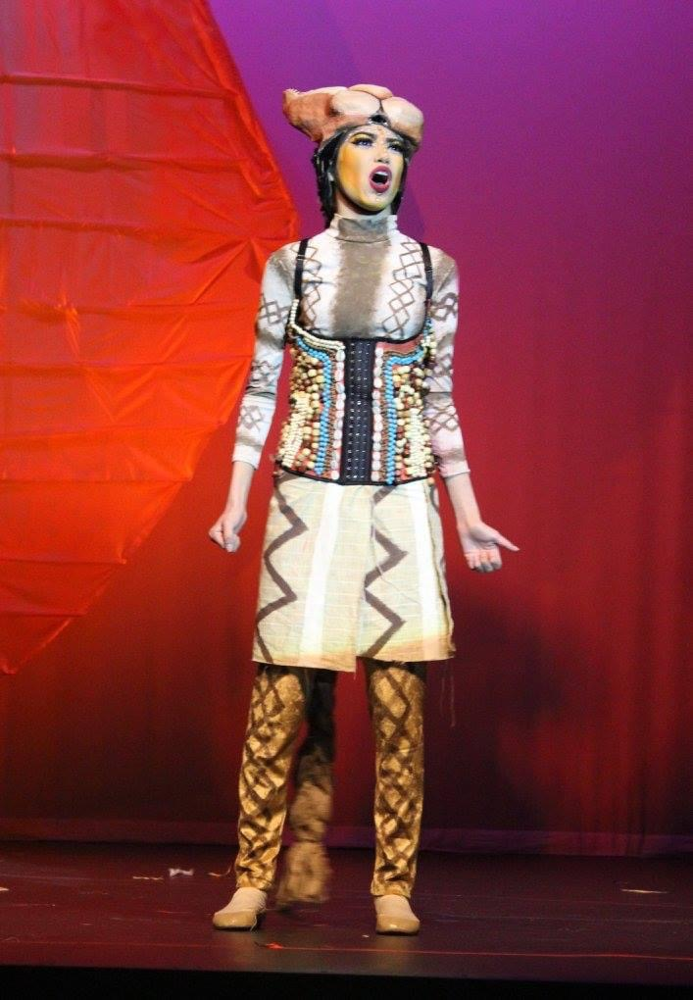

Valerie Luevanos
Actress: Los Angeles, CA
About Me
Early Life
I was born in the summer of 1999 in Harlingen, Texas which is located in the southern tip of Texas. I am the oldest of four siblings. Since I was a little one I loved performing, dancing and singing while I watched Hannah Montana and High School Musical. It was those early years in life that would set a foundation for the career path that I would choose as I got older. Through out elementary and junior high, I was in choir which I always enjoyed. In high school I participated in theatre and was part of the traveling team for speech, drama and debate. I decided to leave my small town and move to the big city to attend college at American Musical and Dramatic Academy in Los Angeles, California to get a Bachelor’s of Fine Arts in Musical Theater.
Career Goals
I dream of being in Film and TV and pursuing a solo artist career! I hope to help others escape reality through my art and inspire others to fulfull their own dreams!

My Inspirations
My inspirations include Judy Garland and Jim Carrey.
Email: valerie.luevanos@gmail.com
Los Angeles, CA
USA